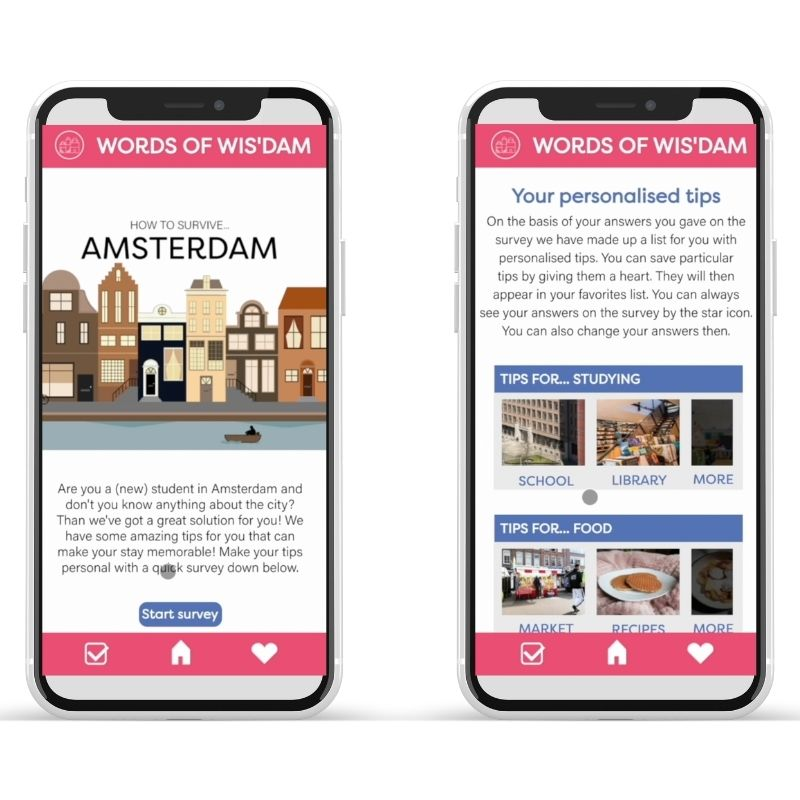

Hoe overleef ik Amsterdam?
In het eerste schooljaar van CMD komen er ook individuele projecten aan bod. Mijn eerste individuele project is een mobile first website geworden om (buitendelandse) studenten te helpen Amsterdam te 'overleven'
Mijn mobile first website heb ik daarom helemaal aangepast op de student. Door middel van een vragen lijst kan dit gepersonaliseerd worden en kunnen zij tips krijgen voor onderwerpen waar zij behoeften aan hebben.